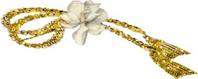

Tôi Quyết Không Chấp Nhận Sự Cùng Tận Của Con Người
(Diễn văn nhận giải Nobel văn học của Faulkner tại Stockholm ngày 10-12-1950)
Tôi cảm thấy rằng giải thưởng này không phải trao cho tôi như một con người mà trao cho tác phẩm của tôi - tác phẩm của một đời tạo ra trong đoạn trường và mồ hôi của tinh thần con người, chẳng phải vì danh vọng, chẳng phải vì lợi nhuận, mà chỉ dùng những chất liệu của tinh thần con người sáng tạo ra một cái gì chưa từng thấy trước đây. Thế nên giải thưởng này chỉ là của tôi trong một sự ủy thác mà thôi. Cung hiến phần tiền thưởng sao cho xứng đáng với mục đích và ý nghĩa có từ ban đầu của nó thì có khác gì đâu - nhưng tôi muốn theo đó mà dùng giây phút được khen tặng này như một đỉnh cao mà từ đây tôi được các bạn trẻ nam nữ lắng nghe, những người sẵn sàng hiến mình cho niềm xao xuyến và lao khổ tương tự, thế nào trong đó cũng có một người một ngày kia sẽ đứng nơi tôi đứng hiện giờ.
Bi kịch của chúng ta hôm nay là cùng chung một nỗi lo sợ cụ thể, phổ biến, kéo dài lâu rồi mà giờ đây chúng ta vẫn còn mang chịu. Không còn những vấn đề tinh thần nữa. Chỉ còn nghi vấn này: Khi nào chúng ta sẽ nổ tan tác đây? Do đó mà các bạn trẻ nam nữ cầm bút hôm nay đã lãng quên những vấn đề của tâm hồn con người đang giao chiến với chính mình, chỉ duy có điều ấy mới làm ra tác phẩm hay, bởi vì chỉ điều ấy mới đáng viết, xứng đáng với lao khổ và mồ hôi.
Phải học lại, phải tự nhủ rằng điều tệ hại nhất trong tất cả mọi người chính là sợ hãi; và tự nhủ rằng, hãy vĩnh viễn quên đi niềm lo sợ, trong phòng viết chớ có dành chỗ cho điều gì khác ngoài những chân lý và niềm tin muôn đời của tâm hồn, những sự thật phổ quát nghìn xưa mà thiếu chúng thì mọi câu chuyện đều phù phiếm và tiêu ma. Đó chính là tình yêu và danh dự, trắc ẩn và tự hào, đồng cảm và hy sinh. Không như thế thì ta chỉ làm việc trong sự nguyền rủa mà thôi. Và chỉ còn viết về tình dục chứ không phải tình yêu, về những chiến bại mà chẳng ai mất mát chút ít giá trị nào, về những chiến công không có niềm hy vọng, càng không có trắc ẩn tình thương, những băn khoăn không gây nổi ngấn tích nào trên nhân loại, không để lại một vết sẹo nhỏ. Không còn viết về trái tim nữa mà về những hạch tuyến chẳng ra chi.
Chưa ôn lại những điều ấy, thì chỉ viết như thể đang đứng lẫn đâu đó mà chờ đợi sự cùng tận của con người. Tôi quyết không chấp nhận sự cùng tận của con người. Rất dễ nói rằng con người bất tử chỉ vì giỏi chịu đựng, rằng khi tiếng chuông tận thế đã ngân tàn từ mỏm đá cuối cùng vô nghĩa, giữa hoàng hôn đỏ úa cuối cùng không có thủy triều lên, rằng ngay cả khi ấy vẫn còn âm thanh là tiếng nói yếu ớt không tắt của con người. Tôi quyết không chấp nhận điều ấy. Tôi tin rằng con người không chỉ chịu đựng: mà hơn nữa, sẽ vượt qua. Con người bất tử, không vì giữa muôn loài, nó có tiếng nói không bao giờ tắt, mà chính vì nó có một tâm hồn, một tinh thần biết đồng cảm, hy sinh và chịu đựng. Bổn phận của nhà thơ, nhà văn là viết về những điều đó. Có sứ mệnh giúp con người chịu đựng bằng cách nâng dậy tâm hồn con người, gợi nhớ lòng can trường và danh dự, hy sinh và tự hào, đồng cảm và trắc ẩn, cùng với sự hy sinh đã làm nên vinh quang trong quá khứ của con người. Tiếng nói của thi nhân không chỉ là tấm bia ghi công con người, mà còn là cột trụ giúp con người chịu đựng và vượt qua.
NHẬT CHIÊU dịch
HẾT

